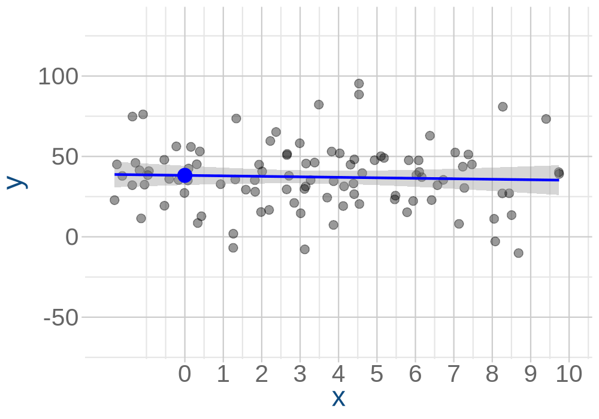
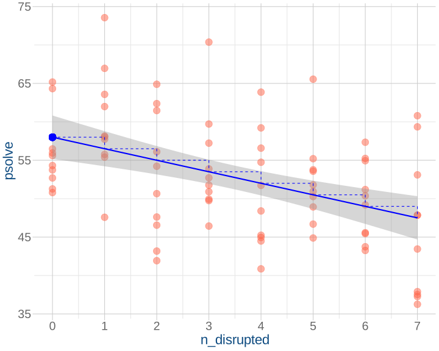
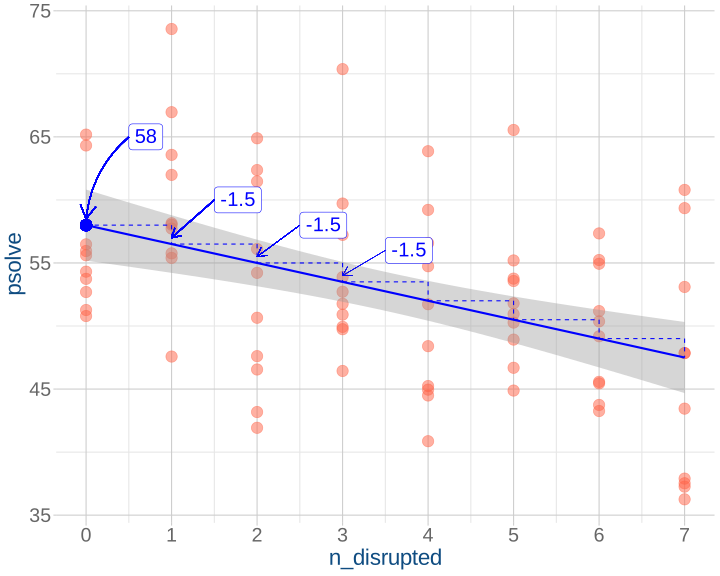
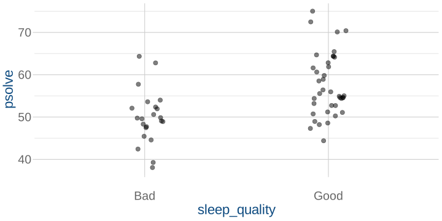
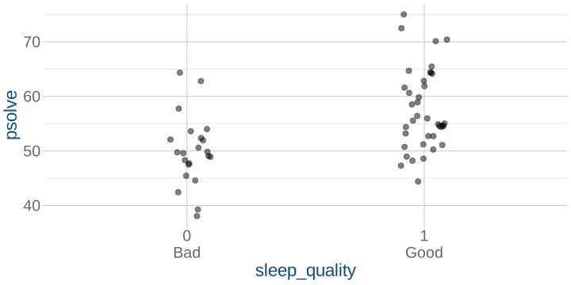
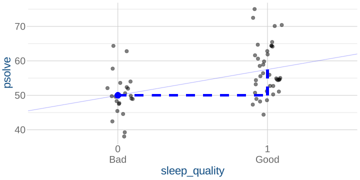
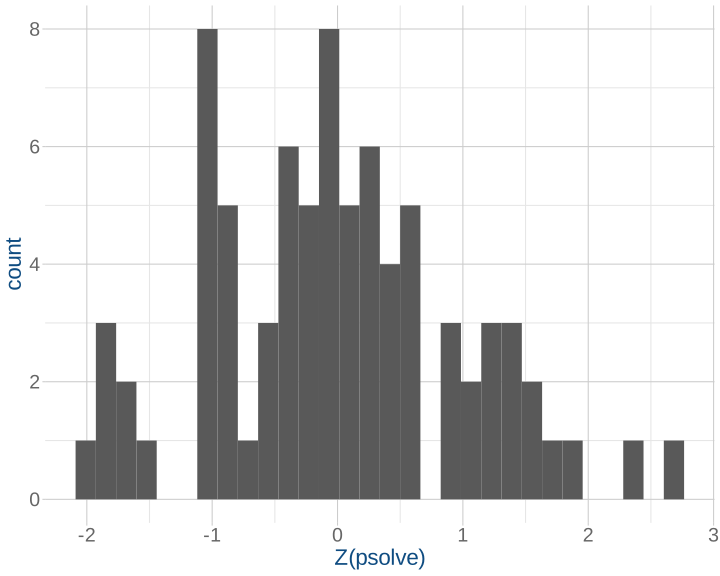
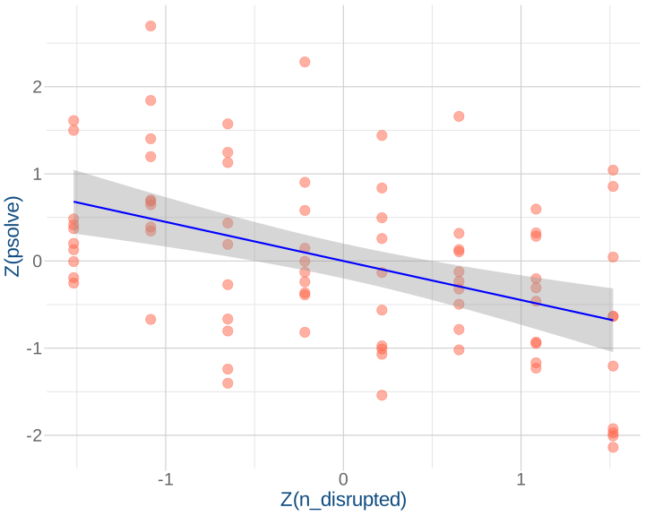
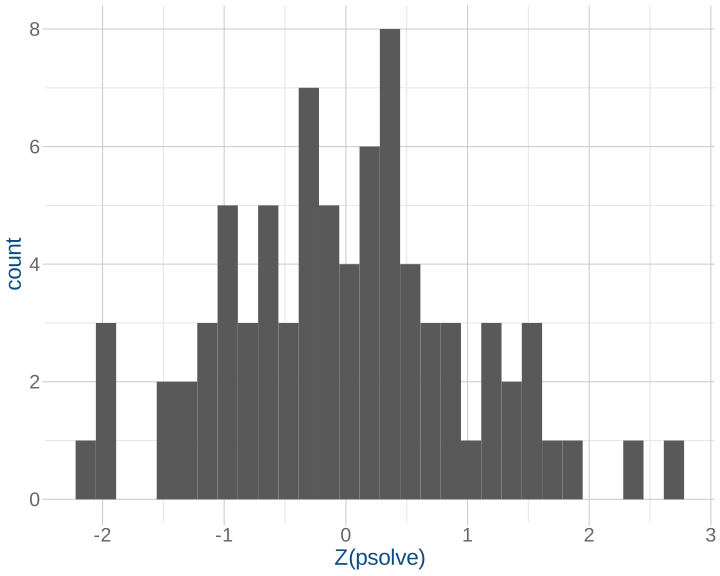
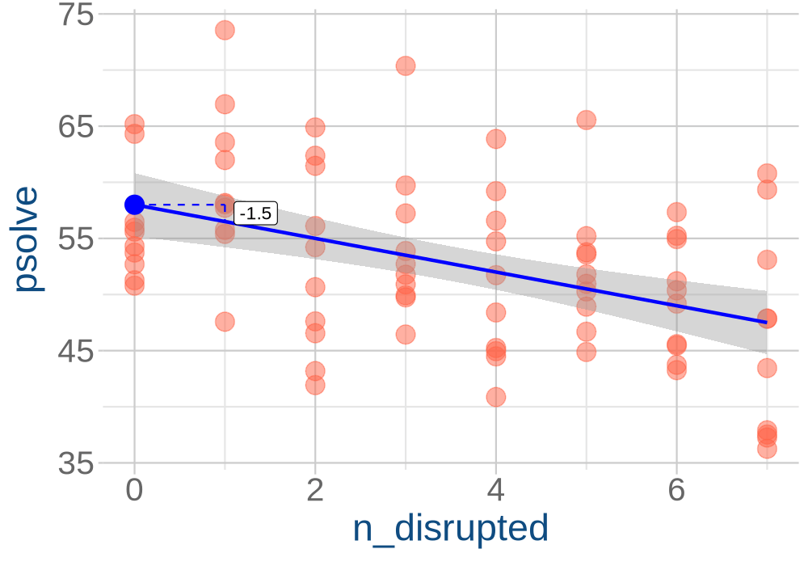

| block 1 name | week 1 topic |
| week 2 topic | |
| week 3 topic | |
| week 4 topic | |
| week 5 topic | |
| block 2 name | week 7 topic |
| week 8 topic | |
| week 9 topic | |
| week 10 topic | |
| week 11 topic |
Data Analysis for Psychology in R 1
Psychology, PPLS
University of Edinburgh
| block 1 name | week 1 topic |
| week 2 topic | |
| week 3 topic | |
| week 4 topic | |
| week 5 topic | |
| block 2 name | week 7 topic |
| week 8 topic | |
| week 9 topic | |
| week 10 topic | |
| week 11 topic |
| block 3 name | week 1 topic |
| week 2 topic | |
| week 3 topic | |
| week 4 topic | |
| week 5 topic | |
| block 4 name | week 7 topic |
| week 8 topic | |
| week 9 topic | |
| week 10 topic | |
| week 11 topic |
The general idea:
\[
\begin{align}
\color{red}{\text{outcome}} &= \color{blue}{\text{model}} + \color{black}{\text{error}} \\
\end{align}
\] The linear model:
\[
\begin{align}
\color{red}{y} &= \color{blue}{\underset{\underset{\text{intercept}}{\uparrow}}{b_0} + \underset{\underset{\text{slope}}{\uparrow}}{b_1} \cdot x} + \color{black}{\epsilon}
\end{align}
\]

The idea:
\[
\begin{align}
\color{red}{\text{outcome}} &= \color{blue}{\text{model}} + \color{black}{\text{error}} \\
\quad \\
\color{red}{y} &= \color{blue}{\underset{\underset{\text{intercept}}{\uparrow}}{b_0} + \underset{\underset{\text{slope}}{\uparrow}}{b_1} \cdot x} + \color{black}{\varepsilon}
\end{align}
\]
Our model:
\[
\begin{align}
\color{red}{\text{ProblemSolvingScore}} &= \color{blue}{b_0 + b_1 \cdot \text{NightsDisrupted}} + \color{black}{\varepsilon} \\
\end{align}
\]
Our estimated model:
\[
\begin{align}
\color{red}{\text{ProblemSolvingScore}} &= \color{blue}{58 - 1.5 \cdot \text{NightsDisrupted}} + \color{black}{\varepsilon}
\end{align}
\]


Design:
People have 0, 1, 2, …. nights of sleep disruption.
Model:
\(\color{red}{\text{ProblemSolvingScore}} = \,\,\,\color{blue}{b_0 \,\,\,+ b_1 \cdot \text{NightsDisrupted}} + \color{black}{\varepsilon}\)
Predictions:
\(\color{red}{\text{ProblemSolvingScore}} = \,\,\,\color{blue}{b_0 \,\,\,+ b_1 \cdot 0} + \color{black}{\varepsilon}\)
\(\color{red}{\text{ProblemSolvingScore}} = \,\,\,\color{blue}{b_0 \,\,\,+ b_1 \cdot 1} + \color{black}{\varepsilon}\)
\(\color{red}{\text{ProblemSolvingScore}} = \,\,\,\color{blue}{b_0 \,\,\,+ b_1 \cdot 2} + \color{black}{\varepsilon}\)
\(\color{red}{\text{ProblemSolvingScore}} = \,\,\,\color{blue}{b_0 \,\,\,+ b_1 \cdot 3} + \color{black}{\varepsilon}\)
…
Design:
People have “good” or “bad” sleep
Model:
\(\color{red}{\text{ProblemSolvingScore}} = \,\,\,\color{blue}{b_0 \,\,\,+ b_1 \cdot \text{SleepQuality}} + \color{black}{\varepsilon}\)
Predictions:
\(\color{red}{\text{ProblemSolvingScore}} = \,\,\,\color{blue}{b_0 \,\,\,+ b_1 \cdot \text{'Bad'}} + \color{black}{\varepsilon}\)
\(\color{red}{\text{ProblemSolvingScore}} = \,\,\,\color{blue}{b_0 \,\,\,+ b_1 \cdot \text{'Good'}} + \color{black}{\varepsilon}\)
# A tibble: 6 × 2
sleep_quality psolve
<chr> <dbl>
1 Good 64.4
2 Bad 49.8
3 Bad 49.9
4 Good 54.6
5 Bad 44.6
6 Bad 45.5# A tibble: 6 × 3
sleep_quality isGood psolve
<chr> <dbl> <dbl>
1 Good 1 64.4
2 Bad 0 49.8
3 Bad 0 49.9
4 Good 1 54.6
5 Bad 0 44.6
6 Bad 0 45.5With just two levels, we just map 0s and 1s to the two categories:
# A tibble: 60 × 4
sleep_quality psolve isGood isBad
<chr> <dbl> <dbl> <dbl>
1 Average 53.9 0 0
2 Good 53.6 1 0
3 Bad 49.4 0 1
4 Bad 60.0 0 1
5 Average 58.5 0 0
6 Average 43.8 0 0
7 Good 45.8 1 0
8 Average 43.7 0 0
9 Good 51.1 1 0
10 Bad 42.7 0 1
# ℹ 50 more rowslm() will do this all for us.The Model:
\[
\color{red}{\text{ProblemSolvingScore}} = \color{blue}{b_0 + b_1 \cdot (\underbrace{\text{SleepQuality="Good"}}_{\text{1 if 'Good'}\\\text{0 otherwise}})} + \color{black}{\varepsilon}
\]
\[ \begin{align} \color{red}{\text{ProblemSolvingScore}} &= \color{blue}{b_0 + b_1 \cdot 0} \\ &= \color{blue}{b_0} \\ \end{align} \]
\[ \begin{align} \color{red}{\text{ProblemSolvingScore}} &= \color{blue}{b_0 + b_1 \cdot 1} \\ &= \color{blue}{b_0 + b_1 } \end{align} \]
The Model:
\[
\color{red}{\text{ProblemSolvingScore}} = \color{blue}{b_0 + b_1 \cdot \text{(SleepQuality="Good")}} + \color{black}{\varepsilon}
\]



Call:
lm(formula = psolve ~ 1 + sleep_quality, data = eg2sleep)
Residuals:
Min 1Q Median 3Q Max
-13.11 -4.60 -1.08 4.03 17.52
Coefficients:
Estimate Std. Error t value Pr(>|t|)
(Intercept) 50.00 1.50 33.34 < 2e-16 ***
sleep_qualityGood 7.50 1.88 3.98 0.00019 ***
---
Signif. codes: 0 '***' 0.001 '**' 0.01 '*' 0.05 '.' 0.1 ' ' 1
...
...
...
...<< predicted Y when X=0
<< change in predicted Y when X goes from x to x+1
Call:
lm(formula = psolve ~ 1 + sleep_quality, data = eg2sleep)
Residuals:
Min 1Q Median 3Q Max
-13.11 -4.60 -1.08 4.03 17.52
Coefficients:
Estimate Std. Error t value Pr(>|t|)
(Intercept) 50.00 1.50 33.34 < 2e-16 ***
sleep_qualityGood 7.50 1.88 3.98 0.00019 ***
---
Signif. codes: 0 '***' 0.001 '**' 0.01 '*' 0.05 '.' 0.1 ' ' 1
...
...
...
...<< predicted Y for reference category
<< change in predicted Y when moving from reference category to named category
Do we want:
\(\color{red}{\text{ProblemSolvingScore}} = \color{blue}{b_0 + b_1 \cdot \text{(SleepQuality="Good")}} + \color{black}{\varepsilon}\)
or
\(\color{red}{\text{ProblemSolvingScore}} = \color{blue}{b_0 + b_1 \cdot \text{(SleepQuality="Bad")}} + \color{black}{\varepsilon}\)
Call:
lm(formula = psolve ~ 1 + sleep_quality, data = eg2sleep)
Residuals:
Min 1Q Median 3Q Max
-13.11 -4.60 -1.08 4.03 17.52
Coefficients:
Estimate Std. Error t value Pr(>|t|)
(Intercept) 50.00 1.50 33.34 < 2e-16 ***
sleep_qualityGood 7.50 1.88 3.98 0.00019 ***
---
Signif. codes: 0 '***' 0.001 '**' 0.01 '*' 0.05 '.' 0.1 ' ' 1
...
...
...
...
Call:
lm(formula = psolve ~ sleep_quality, data = eg2sleep)
Coefficients:
(Intercept) sleep_qualityBad
57.5 -7.5 We fit a simple linear regression model to estimate whether the quality of sleep (“Bad” vs “Good”, treatment coded with “Good” as the reference level) would predict scores on a problem solving task. On average, people reporting “Good” sleep scored 50 on the problem solving task (\(b=57.50, SE = 1.14, t(58) = 50.39, p<.001\)). Compared to those who reported “Good” sleep, those who reported “Bad” sleep scored on average 7.5 points lower (\(b = -7.50, SE = 1.88, t(58)=-3.98, p<.001\)), with a 95% confidence interval of [-11.27, -3.73].
\[ \color{red}{\text{Y}} = \color{blue}{b_0 + b_1 \cdot \text{X}} + \color{black}{\varepsilon} \]
\[ \color{red}{\text{Y}} = \color{blue}{b_0 + b_1 \cdot \text{(X="categoryB")}} + \color{black}{\varepsilon} \]
t-test
Two Sample t-test
data: eg2sleep$psolve by eg2sleep$sleep_quality
t = 4, df = 58, p-value = 0.0002
alternative hypothesis: true difference in means between group Good and group Bad is not equal to 0
95 percent confidence interval:
3.728 11.272
sample estimates:
mean in group Good mean in group Bad
57.5 50.0 linear model
Call:
lm(formula = psolve ~ 1 + sleep_quality, data = eg2sleep)
Residuals:
Min 1Q Median 3Q Max
-13.11 -4.60 -1.08 4.03 17.52
Coefficients:
Estimate Std. Error t value Pr(>|t|)
(Intercept) 57.50 1.14 50.39 < 2e-16 ***
sleep_qualityBad -7.50 1.88 -3.98 0.00019 ***
---
Signif. codes: 0 '***' 0.001 '**' 0.01 '*' 0.05 '.' 0.1 ' ' 1
Residual standard error: 7.03 on 58 degrees of freedom
Multiple R-squared: 0.214, Adjusted R-squared: 0.201
F-statistic: 15.8 on 1 and 58 DF, p-value: 0.000194All of this is “how does Y change as X changes?”
We started whole discussion of linear models with scatterplots and correlations.
Correlation is a standardised metric for characterising the linear association
linear model
“How much does Y change as X increases by 1?”
correlation
“How many SDs does Y change as X increases by 1 SD?”




cor.test
Pearson's product-moment correlation
data: sleepdf$psolve and sleepdf$n_disrupted
t = -4.4, df = 78, p-value = 0.00003
alternative hypothesis: true correlation is not equal to 0
95 percent confidence interval:
-0.6081 -0.2536
sample estimates:
cor
-0.4483 linear model
Call:
lm(formula = psolve ~ 1 + n_disrupted, data = sleepdf)
Residuals:
Min 1Q Median 3Q Max
-13.071 -4.573 -0.505 4.896 17.055
Coefficients:
Estimate Std. Error t value Pr(>|t|)
(Intercept) 58.000 1.417 40.94 < 2e-16 ***
n_disrupted -1.500 0.339 -4.43 0.00003 ***
---
Signif. codes: 0 '***' 0.001 '**' 0.01 '*' 0.05 '.' 0.1 ' ' 1
Residual standard error: 6.94 on 78 degrees of freedom
Multiple R-squared: 0.201, Adjusted R-squared: 0.191
F-statistic: 19.6 on 1 and 78 DF, p-value: 0.0000304linear model with Z-scored variables
Call:
lm(formula = Zpsolve ~ 1 + Zn_disrupted, data = sleepdf)
Residuals:
Min 1Q Median 3Q Max
-1.6943 -0.5928 -0.0655 0.6347 2.2107
Coefficients:
Estimate Std. Error t value Pr(>|t|)
(Intercept) 0.000 0.101 0.00 1
Zn_disrupted -0.448 0.101 -4.43 0.00003 ***
---
Signif. codes: 0 '***' 0.001 '**' 0.01 '*' 0.05 '.' 0.1 ' ' 1
Residual standard error: 0.9 on 78 degrees of freedom
Multiple R-squared: 0.201, Adjusted R-squared: 0.191
F-statistic: 19.6 on 1 and 78 DF, p-value: 0.0000304